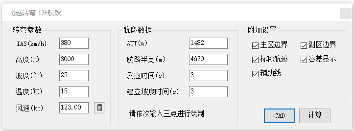
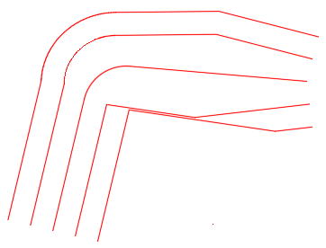

功能简介
【飞越转弯 - DF 航段】用于绘制 PBN 飞越转弯（Fly Over）接 DF（Direct to Fix）航段的保护区。
界面预览

界面元素
| 分区 / 控件 | 说明 |
|---|---|
| 航段数据 | DF 航段的起止定位点、航迹、宽度等。 |
| 转弯参数 | 指示空速、高度、坡度、风速等转弯参数。 |
| 附加设置 | 其它绘制选项。 |
| 计算（按钮） | 计算飞越转弯参数，并输出到命令窗口。 |
| CAD（按钮） | 将飞越转弯保护区绘制到 CAD 窗口中。 |
操作步骤
- 命令行输入
Y52_FlyOver打开窗口。 - 填写“航段数据”与“转弯参数”。
- 点击【计算】输出飞越转弯参数。
- 点击【CAD】，按提示在图面拾取绘制飞越转弯保护区。
提示：飞越（Fly Over）转弯ATT为0时，转弯外边界与PBN定高转弯保护区相同。
应用案例
